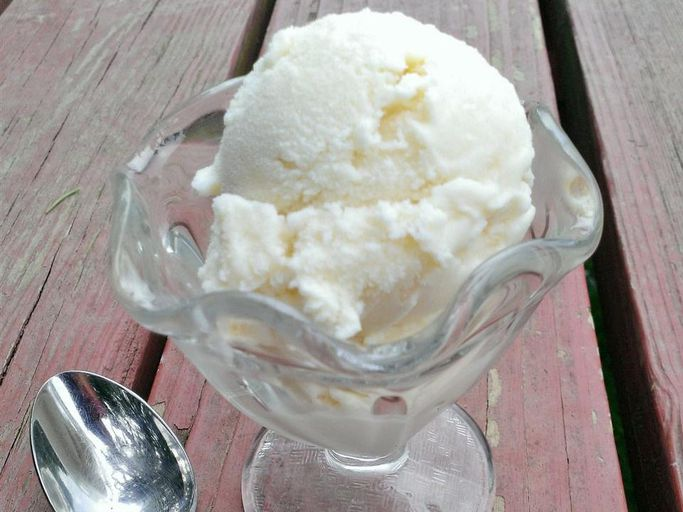

Vanilla Ice Cream
This homemade ice cream is easy to make with just 4 ingredients: pure vanilla extract, milk, heavy whipping cream, and sugar.
This American or Philadelphia-style ice cream makes for a brighter, more pronounced vanilla flavor.

Homemade ice cream is incredibly easy to make with just a few simple ingredients you likely already have on hand. This vanilla ice cream recipe will quickly become a go-to in your repertoire.
Vanilla Ice Cream Ingredients
- Milk: This homemade vanilla ice cream starts with 2 ¼ cups of milk.
- Heavy whipping cream: A cup of heavy whipping cream comes next.
- Sugar: White sugar sweetens things up.
- Vanilla: Two teaspoons of vanilla extract enhances the overall flavor.
How to Make Homemade Ice Cream
- Cook the milk, cream, and sugar until the sugar has dissolved.
- Transfer the mixture to a measuring cup, then add the vanilla extract. Chill overnight.
- Pour the mix into an ice cream maker and churn according to the manufacturer's directions.
- Serve immediately or ripen in the freezer before serving.
Bon appetit!